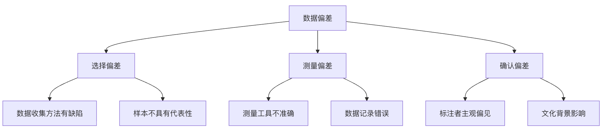
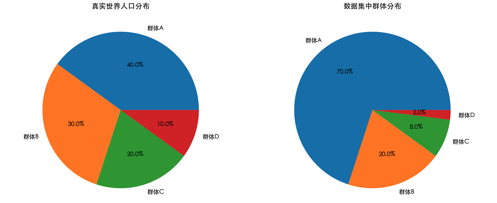

Sesgo de datos
El aprendizaje automático está cambiando el mundo, desde los sistemas de recomendación hasta la conducción autónoma; sus aplicaciones están por todas partes.
Sin embargo, estos sistemas inteligentes no son perfectos; comparten un"talón de Aquiles" (Achilles' Heel)—el sesgo de datos.
Hoy profundizaremos en este problema central que afecta la equidad y la precisión de los modelos de aprendizaje automático.
¿Qué es el sesgo de datos?
El sesgo de datos se refiere a que los datos de entrenamiento no representan con precisión la situación del mundo real, lo que hace que el modelo de aprendizaje automático aprenda patrones erróneos o realice predicciones sesgadas. En pocas palabras, es "basura entra, basura sale": si los datos de entrada tienen problemas, los resultados de salida también serán deficientes.
Los tres tipos principales de sesgo de datos
Sesgo de selección:Ocurre cuando el propio proceso de recopilación de datos tiene un sesgo sistemático. Por ejemplo, encuestar solo a jóvenes a través de las redes sociales sobre su opinión sobre un producto, ignorando a los grupos de mayores que no usan redes sociales.
-
Sesgo de medición:Se producen errores en la medición o el registro de los datos. Por ejemplo, si un sistema de reconocimiento facial se desarrolla principalmente con fotos de personas de piel clara, la precisión de reconocimiento será menor para personas de piel oscura.
-
Sesgo de confirmación:Los investigadores o anotadores de datos introducen sus propios sesgos subjetivos en los datos. Por ejemplo, en tareas de análisis de sentimientos, los anotadores pueden interpretar los sentimientos del texto según su propio contexto cultural, ignorando las expresiones de otras culturas.

¿Cómo afecta el sesgo de datos a los modelos de aprendizaje automático?
Degradación del rendimiento del modelo
Cuando un modelo se desempeña bien en los datos de entrenamiento pero mal en los datos del mundo real, es muy probable que exista un problema de sesgo de datos.
Ejemplo
import numpy as np
from sklearn.model_selection import train_test_split
from sklearn.linear_model import LogisticRegression
from sklearn.metrics import accuracy_score
np.random.seed(42)
n_samples = 1000
# Datos del mundo real
X_real = np.random.uniform(-5, 5, n_samples).reshape(-1, 1)
y_real = (X_real.flatten() > 0).astype(int)
# Datos sesgados: 90% provienen de X > 0, 10% de X < 0
mask_pos = X_real.flatten() > 0
mask_neg = X_real.flatten() <= 0
X_pos = X_real[mask_pos]
y_pos = y_real[mask_pos]
X_neg = X_real[mask_neg]
y_neg = y_real[mask_neg]
# Extraer solo una pequeña cantidad de muestras negativas
neg_sample_size = int(0.1 * len(X_pos))
neg_indices = np.random.choice(len(X_neg), neg_sample_size, replace=False)
X_biased = np.vstack([X_pos, X_neg[neg_indices]])
y_biased = np.hstack([y_pos, y_neg[neg_indices]])
# Dividir entrenamiento / prueba
X_train, X_test, y_train, y_test = train_test_split(
X_biased, y_biased, test_size=0.2, random_state=42
)
# Entrenar el modelo
model = LogisticRegression()
model.fit(X_train, y_train)
# Evaluación en el conjunto de entrenamiento
train_pred = model.predict(X_train)
train_acc = accuracy_score(y_train, train_pred)
print(f"Precisión de entrenamiento: {train_acc:.2%}")
# Evaluación en el mundo real
real_pred = model.predict(X_real)
real_acc = accuracy_score(y_real, real_pred)
print(f"Precisión en el mundo real: {real_acc:.2%}")
print("Conclusión: el conjunto de entrenamiento funciona bien, pero debido al sesgo de distribución, el rendimiento en el mundo real disminuye significativamente")
El resultado de salida es:
训练准确率: 99.08% 真实世界准确率: 96.00% 结论：训练集表现良好，但由于分布偏差，真实世界性能显著下降
Problemas de equidad
El sesgo de datos puede llevar a que el modelo produzca resultados discriminatorios contra ciertos grupos. Por ejemplo, si un algoritmo de contratación se entrena principalmente con datos históricos de empleados varones, podría generar sesgos contra las candidatas mujeres.
Capacidad de generalización insuficiente
El modelo no puede adaptarse a escenarios de datos nuevos o no vistos porque los datos de entrenamiento no cubren situaciones suficientemente diversas.
Fuentes comunes de sesgo de datos
Problemas en la etapa de recopilación de datos
| Tipo de problema | Manifestación específica | Ejemplo |
|---|---|---|
| Sesgo de muestreo | La muestra de datos no representa a la población total | Solo recopilar datos de conducción autónoma en zonas urbanas, ignorando las carreteras rurales |
| Sesgo temporal | Datos desactualizados o sin vigencia | Usar datos de comercio electrónico de 2010 para predecir las tendencias de consumo de 2023 |
| Sesgo de supervivencia | Solo prestar atención a los puntos de datos "supervivientes" | Solo estudiar los datos de empresas exitosas, ignorando la experiencia de las empresas fracasadas |
Problemas en la etapa de anotación de datos
Ejemplo
import pandas as pd
# Crear un conjunto de datos simulado
data = {
'text': [
'Este producto es realmente genial, ¡me encanta!',
'No estoy seguro de si funciona bien',
'Definitivamente no compres este producto basura',
'Está bien, más o menos',
'Muy recomendado, vale mucho más de lo que cuesta'
],
# Supongamos que el anotador tiene su propio sesgo: las reseñas positivas se etiquetan como 1, las demás como 0
'biased_label': [1, 0, 0, 0, 1], # Anotación sesgada
'true_label': [1, 0.5, 0, 0.5, 1] # Puntuación real continua de sentimiento
}
df = pd.DataFrame(data)
print("Ejemplo de sesgo de anotación:")
print(df)
print("\n"Problema: ¡el anotador etiquetó por error las evaluaciones neutrales como negativas!")
La salida es:
标注偏差示例：
text biased_label true_label
0 这个产品真的很棒，我非常喜欢！ 1 1.0
1 不太确定这个好不好用 0 0.5
2 绝对不要买这个垃圾产品 0 0.0
3 还行吧，一般般 0 0.5
4 超级推荐，物超所值 1 1.0
问题：标注者将中性评价错误地标注为负面！
Problemas en la etapa de preprocesamiento de datos
- Manejo inadecuado de valores atípicos
- Selección de características sesgada
- Método de estandarización de datos inapropiado
¿Cómo detectar el sesgo de datos?
1. Análisis estadístico de datos
Examinar la distribución de los diferentes grupos en el conjunto de datos.
Ejemplo
import matplotlib.pyplot as plt
# -------------------------- Configurar fuente china inicio --------------------------
plt.rcParams['font.sans-serif'] = [
# Priorizar Windows
'SimHei', 'Microsoft YaHei',
# Priorizar macOS
'PingFang SC', 'Heiti TC',
# Priorizar Linux
'WenQuanYi Micro Hei', 'DejaVu Sans'
]
# Corregir el problema de que el signo negativo se muestre como un cuadrado
plt.rcParams['axes.unicode_minus'] = False
# -------------------------- Configurar fuente china fin --------------------------
# Simular datos demográficos
groups = ['Grupo A', 'Grupo B', 'Grupo C', 'Grupo D']
population_percent = [40, 30, 20, 10] # Proporción real de la población
dataset_percent = [70, 20, 8, 2] # Proporción en el conjunto de datos
fig, (ax1, ax2) = plt.subplots(1, 2, figsize=(12, 5))
# Distribución real de la población
ax1.pie(population_percent, labels=groups, autopct='%1.1f%%')
ax1.set_title('Distribución de la población en el mundo real')
# Distribución del conjunto de datos
ax2.pie(dataset_percent, labels=groups, autopct='%1.1f%%')
ax2.set_title('Distribución de grupos en el conjunto de datos')
plt.tight_layout()
plt.show()
print("Resultado de la detección: ¡el grupo A está sobrerrepresentado en el conjunto de datos y el grupo D está subrepresentado!")

2. Análisis de diferencias de rendimiento del modelo
Comparar el rendimiento del modelo en diferentes subgrupos.
3. Cálculo de métricas de equidad
Usar métricas estadísticas para cuantificar el grado de equidad del modelo.
Estrategias para solucionar el sesgo de datos
Soluciones a nivel de datos
1. Mejora de las estrategias de recopilación de datos
- Muestreo activo: recopilar conscientemente datos de grupos subrepresentados
- Aumento de datos: aumentar la diversidad de datos mediante medios técnicos
- Múltiples fuentes de datos: integrar datos de diferentes fuentes
2. Técnicas de preprocesamiento de datos
Ejemplo
import numpy as np
from sklearn.utils import resample
np.random.seed(42)
# 1. Construir datos desequilibrados (característica unidimensional + etiqueta)
X_majority = np.random.normal(0, 1, 900).reshape(-1, 1)
y_majority = np.zeros(900, dtype=int)
X_minority = np.random.normal(2, 1, 100).reshape(-1, 1)
y_minority = np.ones(100, dtype=int)
print(f"Antes del remuestreo:")
print(f"Clase mayoritaria: {len(X_majority)}")
print(f"Clase minoritaria: {len(X_minority)}")
# 2. Realizar sobremuestreo de la clase minoritaria
X_minority_upsampled, y_minority_upsampled = resample(
X_minority,
y_minority,
replace=True,
n_samples=len(X_majority),
random_state=42
)
# 3. Combinar el conjunto de datos equilibrado
X_balanced = np.vstack([X_majority, X_minority_upsampled])
y_balanced = np.hstack([y_majority, y_minority_upsampled])
print(f"\n"Después del remuestreo:")
print(f"Clase mayoritaria: {np.sum(y_balanced == 0)}")
print(f"Clase minoritaria: {np.sum(y_balanced == 1)}")
print("\n"Conclusión: el número de muestras está completamente equilibrado")
Salida:
重采样前： 多数类: 900 少数类: 100 重采样后： 多数类: 900 少数类: 900 结论：样本数量已完全平衡
Soluciones a nivel de algoritmo
Restricciones de equidad: agregar condiciones de restricción de equidad durante el entrenamiento del modelo.
-
De-sesgo adversarial: usar técnicas de aprendizaje adversarial para reducir el sesgo en el modelo.
-
Métodos de posprocesamiento: ajustar las predicciones del modelo para mejorar la equidad.
Ejercicio práctico: construir un clasificador sin sesgos
Veamos a través de un ejemplo completo cómo manejar el sesgo de datos en todo el proceso, desde la recopilación de datos hasta la evaluación del modelo.
Ejemplo
import numpy as np
import pandas as pd
from sklearn.datasets import make_classification
from sklearn.model_selection import train_test_split
from sklearn.ensemble import RandomForestClassifier
from sklearn.metrics import classification_report, confusion_matrix
from imblearn.over_sampling import SMOTE
import warnings
warnings.filterwarnings("ignore", category=FutureWarning)
# 1. Generar datos desequilibrados simulados
X, y = make_classification(
n_samples=2000,
n_features=10,
n_informative=8,
n_redundant=2,
n_clusters_per_class=1,
weights=[0.9, 0.1], # Crear deliberadamente sesgo de clases
flip_y=0,
random_state=42
)
# Convertir a DataFrame para facilitar el análisis
feature_names = [f'feature_{i}' for i in range(X.shape[1])]
df = pd.DataFrame(X, columns=feature_names)
df['target'] = y
print("=== Análisis del sesgo de datos ===")
print(f"Forma del conjunto de datos: {df.shape}")
print("Distribución de clases:")
print(df['target'].value_counts())
print(f"Proporción de la clase minoritaria: {df['target'].value_counts(normalize=True))
# 2. División de datos (mantener las proporciones de clase, evitar el sesgo secundario)
X_train, X_test, y_train, y_test = train_test_split(
X,
y,
test_size=0.3,
random_state=42,
stratify=y
)
print("\n=== Distribución de entrenamiento/prueba ===")
print("Conjunto de entrenamiento:", np.bincount(y_train))
print("Conjunto de prueba:", np.bincount(y_test))
# 3. Aplicar SMOTE para manejar el sesgo del conjunto de entrenamiento
print("\n=== Manejo del sesgo de datos (SMOTE) ===)
smote = SMOTE(random_state=42)
X_train_balanced, y_train_balanced = smote.fit_resample(X_train, y_train)
print("Antes de SMOTE:", np.bincount(y_train))
print("Después de SMOTE:", np.bincount(y_train_balanced))
# 4. Entrenamiento del modelo
print("\n=== Entrenamiento del modelo ===)
# Modelo de referencia: sin manejo de sesgo
model_imbalanced = RandomForestClassifier(
n_estimators=200,
random_state=42
)
model_imbalanced.fit(X_train, y_train)
# Modelo con manejo de sesgo: entrenado después de SMOTE
model_balanced = RandomForestClassifier(
n_estimators=200,
random_state=42
)
model_balanced.fit(X_train_balanced, y_train_balanced)
# 5. Evaluación del modelo
print("\n=== Evaluación del modelo (conjunto de prueba) ===)
print("\n【Sin manejo de sesgo】Informe de clasificación")
y_pred_imbalanced = model_imbalanced.predict(X_test)
print(classification_report(y_test, y_pred_imbalanced, digits=4))
print("Matriz de confusión:")
print(confusion_matrix(y_test, y_pred_imbalanced))
print("\n【Después de aplicar SMOTE】Informe de clasificación")
y_pred_balanced = model_balanced.predict(X_test)
print(classification_report(y_test, y_pred_balanced, digits=4))
print("Matriz de confusión:")
print(confusion_matrix(y_test, y_pred_balanced))
print(
"\nConclusión:\n"
"1. Sin manejar el sesgo, el Recall del modelo para la clase minoritaria es extremadamente bajo\n"
"2. SMOTE mejora significativamente el Recall y el F1 de la clase minoritaria\n"
"3. Accuracy no es una métrica fiable para datos desequilibrados"
)
Resultados de salida:
=== 数据偏差分析 ===
数据集形状: (2000, 11)
类别分布:
target
0 1800
1 200
Name: count, dtype: int64
少数类占比: 10.00%
=== 训练 / 测试集分布 ===
训练集: [1260 140]
测试集: [540 60]
=== 处理数据偏差（SMOTE）===
SMOTE 前: [1260 140]
SMOTE 后: [1260 1260]
=== 模型训练 ===
=== 模型评估（测试集）===
【未处理偏差】分类报告
precision recall f1-score support
0 0.9872 1.0000 0.9936 540
1 1.0000 0.8833 0.9381 60
accuracy 0.9883 600
macro avg 0.9936 0.9417 0.9658 600
weighted avg 0.9885 0.9883 0.9880 600
混淆矩阵:
[[540 0]
[ 7 53]]
【SMOTE 处理后】分类报告
precision recall f1-score support
0 0.9944 0.9944 0.9944 540
1 0.9500 0.9500 0.9500 60
accuracy 0.9900 600
macro avg 0.9722 0.9722 0.9722 600
weighted avg 0.9900 0.9900 0.9900 600
混淆矩阵:
[[537 3]
[ 3 57]]
结论：
1. 不处理偏差时，模型对少数类 Recall 极低
2. SMOTE 显著提升少数类 Recall 与 F1
3. Accuracy 不是不平衡数据的可靠指标
Mejores prácticas de la industria para la gestión del sesgo de datos
1. Establecer un marco de gobernanza de datos
- Definir procesos estándar para la recopilación y el etiquetado de datos
- Auditar periódicamente la calidad de los datos
- Establecer mecanismos de detección de sesgo en los datos
2. Construcción de equipos diversos
- Garantizar la diversidad en los equipos de ciencia de datos
- Incluir expertos de dominio y especialistas en ética
- Realizar capacitaciones periódicas sobre conciencia de sesgos
3. Transparencia y explicabilidad
- Registrar las fuentes de datos y los procesos de tratamiento
- Proporcionar explicaciones sobre las decisiones del modelo
- Publicar el rendimiento del modelo en distintos grupos
4. Monitoreo y actualización continuos
- Evaluar periódicamente el desempeño del modelo en el mundo real
- Establecer mecanismos de retroalimentación para recopilar informes de los usuarios
- Actualizar los modelos de manera oportuna para adaptarse a los cambios
Resumen y perspectivas
El sesgo de datos es un desafío inevitable en el aprendizaje automático, pero mediante métodos sistemáticos de detección y tratamiento podemos reducir significativamente su impacto. La clave es reconocer:
- El sesgo de datos está en todas partes: casi todos los conjuntos de datos del mundo real contienen alguna forma de sesgo
- La detección temprana es crucial: considerar los problemas de sesgo en las primeras etapas del proyecto tiene el menor costo
- Combinación de tecnología y procesos: las soluciones puramente técnicas no son suficientes; se necesita combinar procesos y gestión
- Proceso de mejora continua: manejar el sesgo de datos es un proceso continuo, no una tarea de una sola vez
A medida que aumentan las exigencias de equidad y responsabilidad en el aprendizaje automático, gestionar eficazmente el sesgo de datos se convertirá en una habilidad fundamental para todo científico de datos e ingeniero de aprendizaje automático. Recuerda que un buen sistema de aprendizaje automático no solo debe tener una alta exactitud, sino también una alta equidad y fiabilidad.
Otras extensiones
Haz clic para compartir notas
<p style="font-size:14px;">¡La nota debe ser una extensión del contenido de este artículo!</p><br> <p style="font-size:12px;"><a href="../tougao.html" target="_blank">Para enviar artículos, haz clic aquí</a></p> <p style="font-size:14px;"><a href="../w3cnote/runoob-user-test-intro.html" target="_blank">Cómo obtener el código de invitación para el registro</a></p> <h3 class="text-muted"><i class="fa fa-info-circle" aria-hidden="true"></i> ¡Antes de compartir notas, debes <a href=";.html" class="runoob-pop">iniciar sesión</a>!</h3> <p><a href="../w3cnote/runoob-user-test-intro.html" target="_blank">Cómo obtener el código de invitación para el registro</a></p>